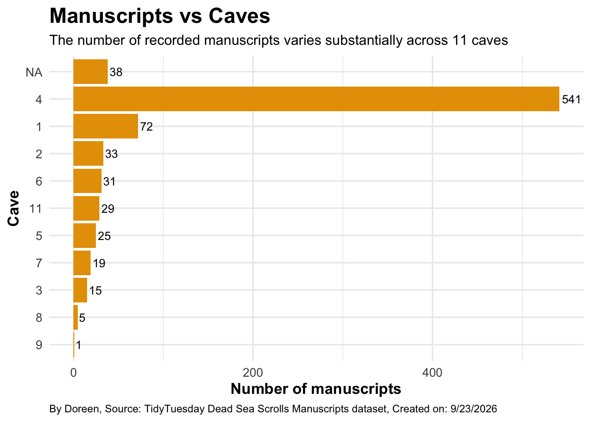
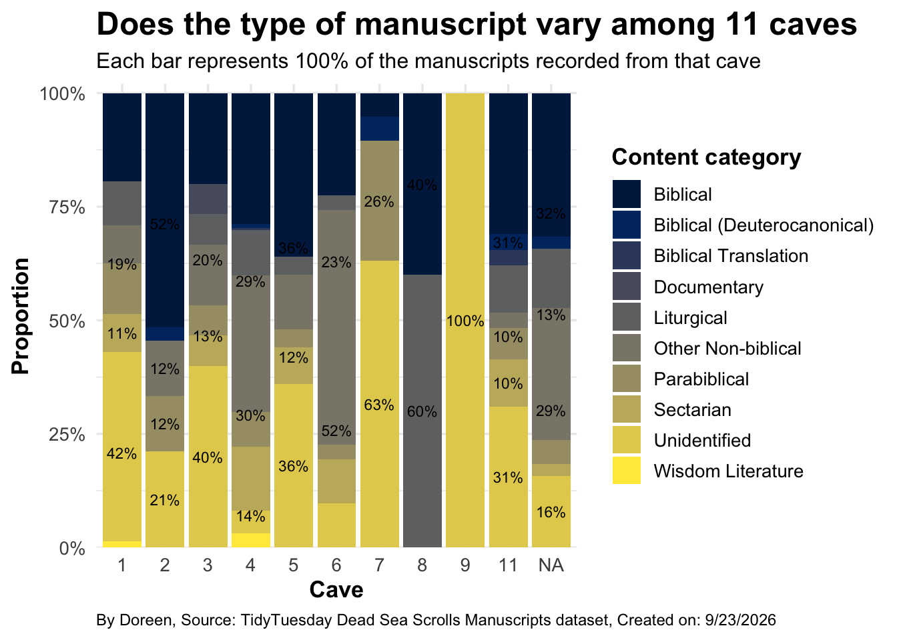

Homework 02
TidyTuesday Part (Optional)
You can count work on this week’s TidyTuesday toward the exceptional work.
Explore the week’s TidyTuesday challenge. Develop a research question, then answer it through a short data story mainly composed of effective visualizations. Provide sufficient background for readers to grasp your narrative. Refer to the Homework Instructions ⭐ page on the course website for details on how to submit this part.
Research Question
How does the type of Dead Sea Scroll manuscript vary among 11 caves?
Import data
Plot 1
What are the Dead Sea Scroll manuscripts distrubution look like?
Code
cave_counts <- dead_sea_scrolls |>
count(cave, sort = TRUE)
ggplot(cave_counts, aes(x = reorder(cave, n), y = n)) +
geom_col(fill = "#E69F00") +
geom_text(aes(label = n), hjust = -0.15, size = 3.5) +
coord_flip() +
labs(title = "Manuscripts vs Caves",
subtitle = "The number of recorded manuscripts varies substantially across 11 caves",
x = "Cave",
y = "Number of manuscripts",
caption = "By Doreen, Source: TidyTuesday Dead Sea Scrolls Manuscripts dataset, Created on: 9/23/2026") +
theme_minimal(base_size = 13) +
theme(plot.title = element_text(face = "bold", size = 18),
plot.subtitle = element_text(size = 12),
axis.title = element_text(face = "bold"),
plot.caption = element_text(size = 9, hjust = 0))
Plot 2
Does the type of manuscript vary among 11 caves?
Code
cave_content <- dead_sea_scrolls |>
count(cave, content_category) |>
group_by(cave) |>
mutate(proportion = n / sum(n), percent = proportion * 100) |>
ungroup()
ggplot(cave_content,aes(x = factor(cave), y = proportion, fill = content_category)) +
geom_col() +
geom_text(data = cave_content |>
filter(proportion >= 0.10),
aes(label = paste0(round(percent), "%")),
position = position_stack(vjust = 0.5), size = 3) +
scale_y_continuous(labels = scales::percent, expand = expansion(mult = c(0, 0.02))) +
scale_fill_viridis_d(option = "cividis") +
labs(title = "Does the type of manuscript vary among 11 caves",
subtitle = "Each bar represents 100% of the manuscripts recorded from that cave",
x = "Cave",
y = "Proportion",
fill = "Content category",
caption = "By Doreen, Source: TidyTuesday Dead Sea Scrolls Manuscripts dataset, Created on: 9/23/2026") +
theme_minimal(base_size = 13) +
theme(plot.title = element_text(face = "bold", size = 18),
plot.subtitle = element_text(size = 12),
axis.title = element_text(face = "bold"),
legend.title = element_text(face = "bold"),
legend.position = "right",
plot.caption = element_text(size = 9, hjust = 0))
Conclusion: The manuscripts are unevenly distributed across caves, as the cave 4 has the most manuscripts than all the others. And different caves also have different compositions of manuscript types. Thus, the number of manuscripts and their content of Dead Sea Scroll collection varies among those 11 discovery sites.